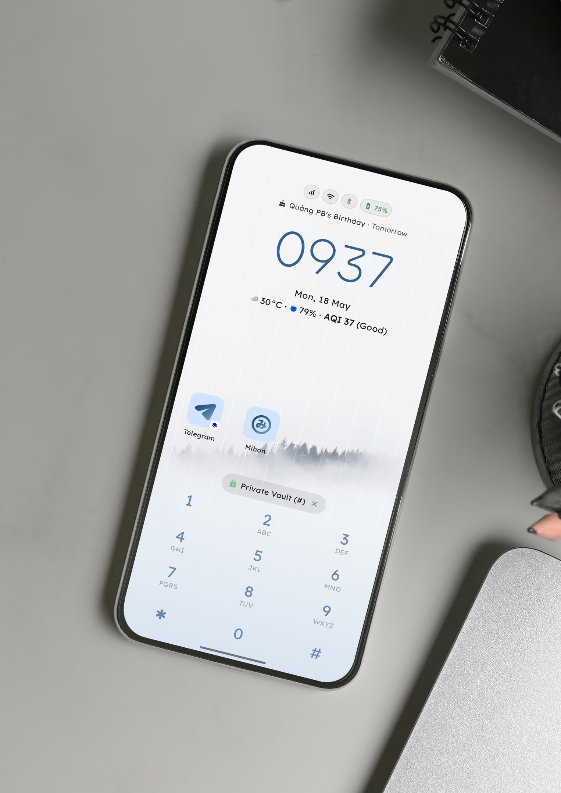

1. Nghịch Lý Của "Minimalist Phone": Trả Tiền Quá Đắt Để Dùng Điện Thoại Ít Đi
Khi bắt đầu hành trình "cai nghiện điện thoại" (digital detox), ý tưởng về một launcher tối giản vô cùng hấp dẫn: loại bỏ các chấm đỏ thông báo mời gọi, xóa bỏ lưới icon rực rỡ khiến não bộ thèm khát dopamine, và biến smartphone thành một công cụ đơn giản, hữu ích.
Trong nhiều năm, Minimalist Phone là cái tên nổi bật trên Google Play Store. Nhưng gần đây, cộng đồng tối giản công nghệ trên r/dumbphones và các hội nhóm tại Việt Nam ngày càng bày tỏ sự mệt mỏi:
- Giá đăng ký quá đắt: Bắt người dùng trả 25$ – 30$ mỗi năm (khoảng 650.000₫ – 750.000₫/năm) chỉ để biến màn hình thành nền đen chữ trắng.
- Mỏi mắt cuộn danh sách: Mỗi lần muốn mở một app không ghim ở màn hình chính, bạn phải vuốt qua một danh sách dọc hơn 70 ứng dụng xếp theo bảng chữ cái. Quá trình này tạo ra rào cản nhưng lại gây mệt mỏi thị giác không cần thiết.
- Phân tích dữ liệu ngầm: Một ứng dụng kêu gọi người dùng rời xa smartphone lại tích hợp các thư viện đo lường (telemetry/analytics) chạy ngầm liên tục trên đám mây.
2. Phản Xạ Cơ Bắp: Vì Sao Bàn Phím T9 2 Chạm Đánh Bại Danh Sách Chữ Cái
Ở Minimalist Phone, để mở một ứng dụng như Spotify hoặc Grab, bạn phải vuốt sang ngăn kéo ứng dụng, cuộn từ A đến S hoặc G. Thao tác này mất từ 3 đến 5 giây và buộc mắt bạn phải quét qua hàng loạt tên ứng dụng khác — vô tình kích hoạt lại sự xao nhãng.
Key Launcher kế thừa tốc độ huyền thoại của điện thoại bàn phím T9 cổ điển:

Với bàn phím T9, ngón tay cái của bạn hình thành phản xạ xúc giác cơ bắp (muscle memory). Bạn không bao giờ phải căng mắt quét một danh sách chữ cái dài dằng dặc. Bạn có thể mở đúng ứng dụng khi đang đi bộ hoặc cầm ly cà phê bằng một tay cực kỳ an toàn và chính xác.
3. Bảng So Sánh Chi Tiết: Key Launcher vs. Minimalist Phone
| Tiêu chí so sánh | Key Launcher | Minimalist Phone |
|---|---|---|
| Cơ chế tìm & mở app | Bàn phím T9 2 chạm & Vuốt QWERTY (<200ms) | Cuộn danh sách chữ cái (3-5 giây) |
| Kho riêng tư bảo mật | Không giới hạn kho mã PIN / Vân tay riêng | Chỉ có tính năng ẩn app cơ bản |
| Bảo mật & Ngoại tuyến | 100% Offline, Zero Tracking, Không tài khoản | Yêu cầu mạng, gửi dữ liệu phân tích |
| Công cụ tập trung tích hợp | Pomodoro, Đồng hồ bàn, Lời bài hát đồng bộ | Chỉ chặn app sau thời gian dùng |
| Chi phí mua bản quyền | 149.000₫ Trọn Đời (VN) / $19.99 Quốc tế | ~700.000₫/năm hoặc ~1.300.000₫ trọn đời |
| Phiên bản miễn phí | Đầy đủ T9, không quảng cáo, dùng vĩnh viễn | Khóa gần hết tính năng sau bản thử nghiệm |
4. Quyền Riêng Tư Tuyệt Đối: 100% Ngoại Tuyến & Multiple Private Vaults
Một trong những nguyên nhân hàng đầu khiến người dùng rời bỏ Minimalist Phone là sự thiếu vắng các giải pháp bảo mật nâng cao. Hầu hết người dùng muốn "cai nghiện" mạng xã hội (Facebook, TikTok, Instagram) nhưng không thể xóa hẳn vì cần công việc hoặc liên lạc gia đình.
Key Launcher giải quyết vấn đề này bằng tính năng Multiple Private Vaults (Nhiều Kho Riêng Tư):
- Bạn có thể tạo một Kho "Mạng xã hội" hoặc "Ứng dụng tài chính" riêng biệt.
- Tất cả ứng dụng trong kho sẽ biến mất hoàn toàn khỏi danh sách tìm kiếm thông thường.
- Chỉ khi bạn bấm tổ hợp phím số bí mật hoặc quét vân tay sinh trắc học, kho ứng dụng mới xuất hiện.

5. Xóa Bỏ Nỗi Mệt Mỏi Vì Thuê Bao Định Kỳ (Subscription Fatigue)
Tại sao một ứng dụng màn hình chính lại phải thu phí thuê bao hàng tháng hay hàng năm? Bạn đã mua chiếc điện thoại, bạn nên được làm chủ hoàn toàn giao diện của mình.
Key Launcher giữ vững triết lý mức giá trung thực và công bằng:
Trải nghiệm trọn vẹn bàn phím T9, tùy biến màu sắc, không có quảng cáo gây phiền toái mãi mãi.
Mở khóa toàn bộ Kho riêng tư không giới hạn, Super Focus Pomodoro, cử chỉ nâng cao và hỗ trợ trọn đời.
6. Kết Luận: Khi Nào Bạn Nên Chọn Key Launcher?
Nếu bạn muốn có một launcher tối giản vừa giúp cắt đứt cơn nghiện smartphone, vừa giữ nguyên năng suất công việc tốc độ cao mà không phải trả hàng trăm ngàn tiền thuê bao mỗi năm, Key Launcher chính là câu trả lời hoàn hảo nhất.
Bạn không cần phải từ bỏ smartphone hiện đại để mua một chiếc máy "cục gạch" thiếu thốn ứng dụng ngân hàng hay bản đồ. Bạn chỉ cần cài đặt Key Launcher, biến chiếc điện thoại thành một công cụ trung tính và lấy lại quyền kiểm soát thời gian của chính mình.